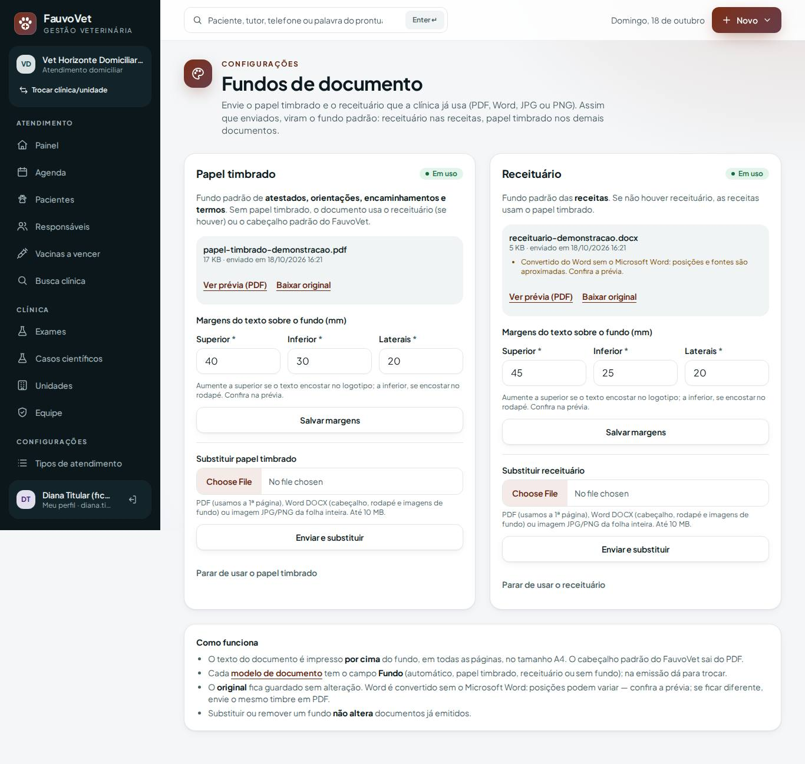
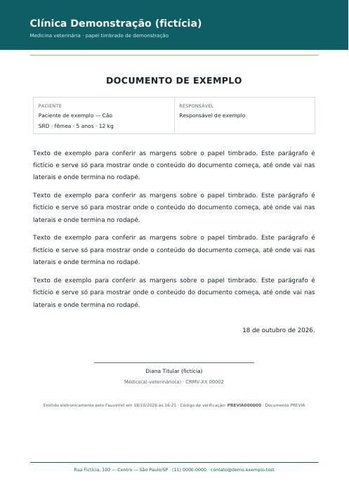
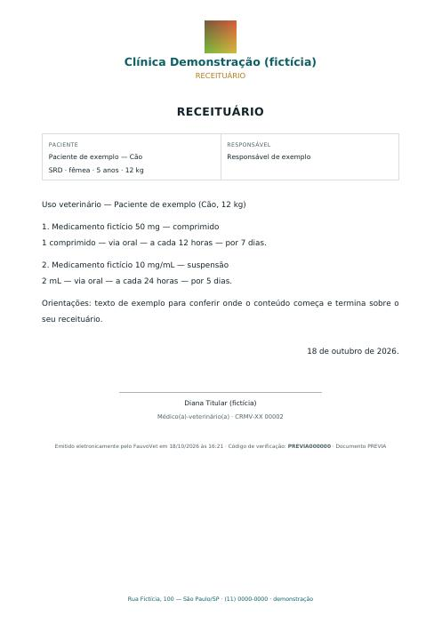
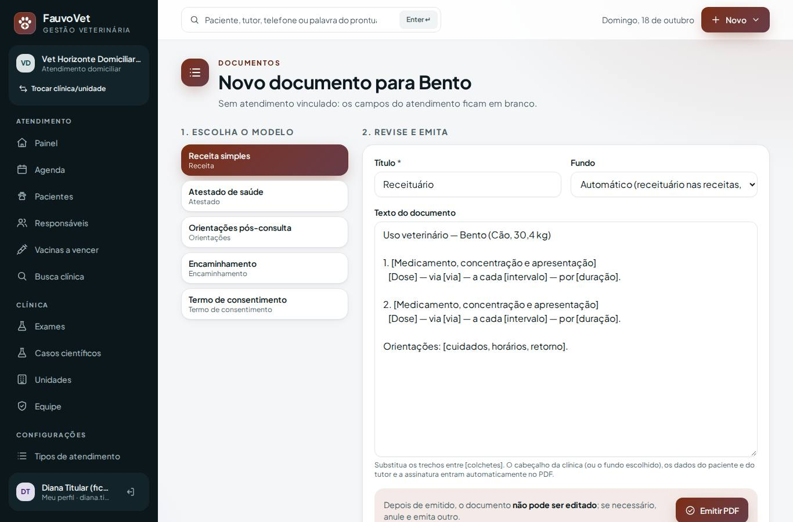
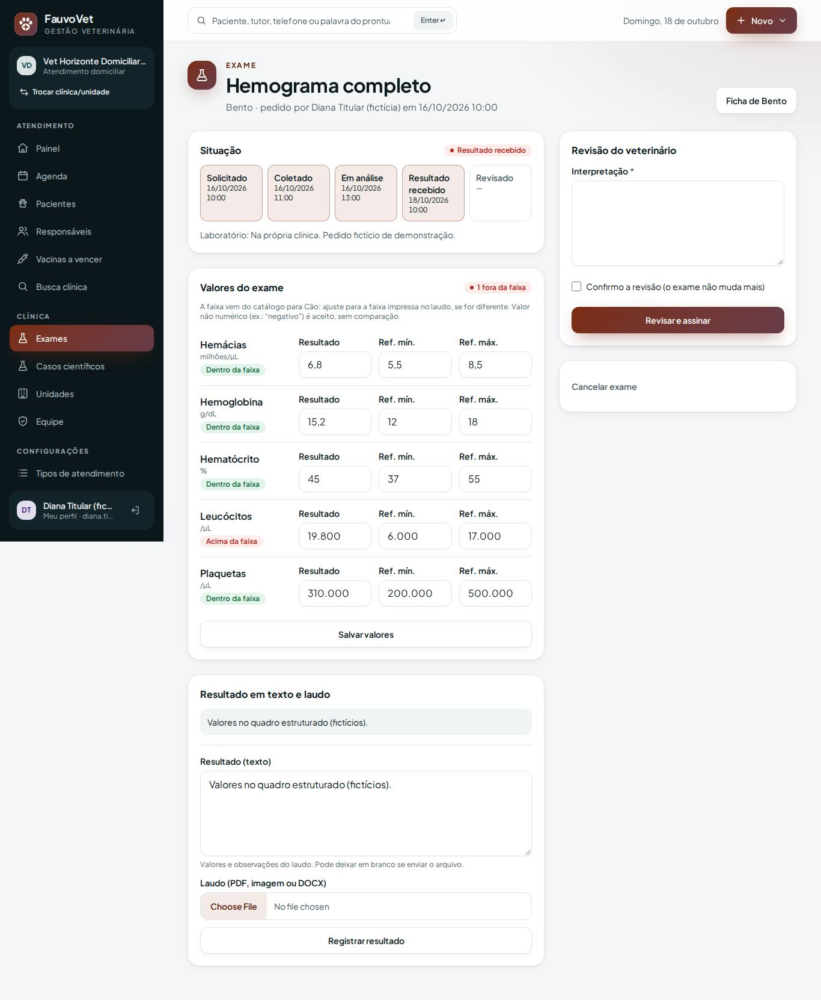
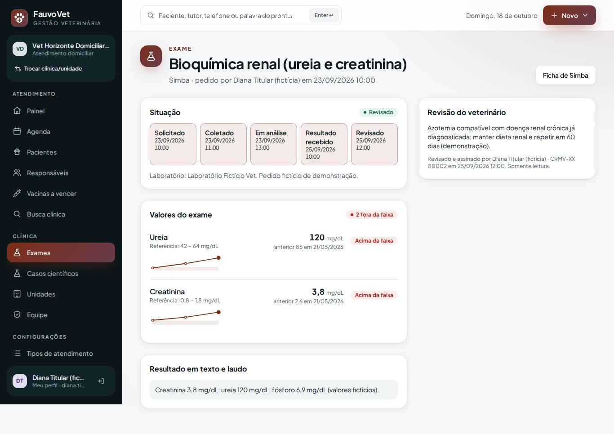
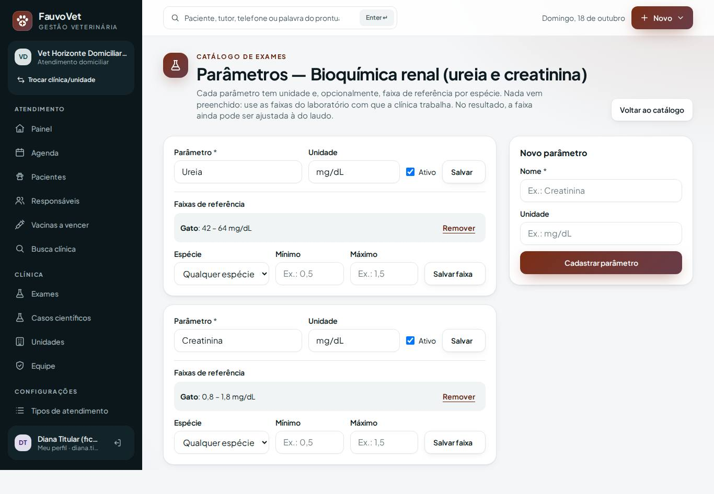
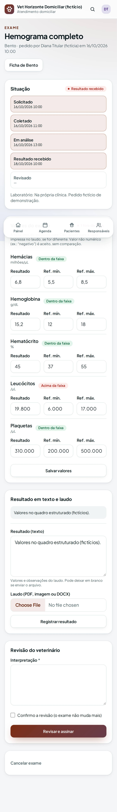

Fundos de documento (papel timbrado e receituário) + exames estruturados
ID: 2026-10-21-fundos-exames-estruturados · Data: 21/10/2026 · Versão: 0.16.0 · Módulos: Documentos, Exames (ADR-020) · Estado: implementado e testado localmente; publicação a cargo do proprietário (seção 7)
1. Objetivo
- Pedido do proprietário: "o sistema precisa aceitar um PDF ou DOCX com papel timbrado e/ou receituário, um local para cada; assim que enviados viram fundos padrão dos documentos, e todos os documentos devem ter um campo para selecionar o fundo".
- Próximo passo do roteiro (Fase 3): exames estruturados — parâmetros com unidade e faixa de referência por espécie, alerta de fora da faixa e gráfico comparativo.








2. O que mudou
Fundos de documento
- Configurações → Fundos de documento (quem configura modelos: titular, gestão, veterinário): um espaço para o papel timbrado e outro para o receituário.
- Aceita PDF (1ª página), Word DOCX (cabeçalho, rodapé, logotipo e imagens de fundo; margens do próprio Word) e JPG/PNG (folha inteira). Até 10 MB; tipo conferido pelo conteúdo; original guardado com SHA-256.
- Assim que enviado vira o fundo padrão: receitas no receituário, demais documentos no timbrado (sem o preferido, usa o outro; sem nenhum, o cabeçalho padrão).
- Campo “Fundo” em cada modelo (automático, papel timbrado, receituário, sem fundo — trocar gera nova versão) e na emissão de cada documento.
- Prévia em PDF com texto fictício e margens ajustáveis (superior, inferior, laterais).
- Substituir/remover aposenta o anterior; documentos emitidos não mudam e guardam qual fundo usaram.
- PDFs do Word/Acrobat (tabela comprimida, PDF 1.5+) são aceitos; PDF protegido por senha é recusado com explicação.
Exames estruturados
- Catálogo de exames → Parâmetros e faixas: parâmetros com unidade (o catálogo padrão traz nome/unidade de hemograma, renal, hepática e urinálise, sem faixa) e faixas por espécie ou “qualquer espécie”.
- No exame, quadro Valores do exame: resultado + faixa (sugerida pela espécie, ajustável à do laudo). Situação: abaixo / dentro / acima / sem faixa. Texto como “negativo” é aceito.
- Alerta “N fora da faixa” no painel de exames e na ficha; gráfico comparativo por parâmetro com a faixa sombreada; valores entram na busca clínica.
- Valores editáveis até a revisão do veterinário; depois ficam somente leitura.
Correção
Os modelos padrão (receita, atestado…) não eram criados se a clínica importasse um modelo ou carregasse a demonstração antes de abrir a lista de modelos.
Arquivos e dependências
- Migração
2026_10_21_000001_create_document_backgrounds_and_exam_values(4 tabelas + 2 colunas). app/Documents/{PdfOverlay,PdfXrefFlattener,DocxLetterhead,PdfRenderer}.php,app/Files/ZipReader.php,app/Services/DocumentBackgroundService.php,app/Http/Controllers/DocumentBackgroundController.php, modelosDocumentBackground,ExamAnalyte,ExamReferenceRange,ExamResultValue.- Telas:
documents/backgrounds,exams/analytes,exams/_values,exams/_sparkline. - Dependências:
setasign/fpdi2.6.9 esetasign/fpdf1.9.0 (MIT, PHP puro). - Demonstração v5.
3. Pré-requisitos
Os mesmos das entregas anteriores. Há dependência PHP nova: rode pnpm bootstrap antes de gerar o pacote. Recomendado no servidor: extensão gd (o diagnostico agora mostra extensions_recommended_missing).
Git Bash/macOS: NOT RUN.
4. Passo a passo (no seu computador)
- Terminal
cd ~/code/fauvovet→git pull --ff-only→pnpm bootstrap→pnpm db:start→pnpm db:migrate. - Terminal
pnpm dev→ titular → Configurações → Dados de demonstração → Atualizar demonstração.
5. Como testar
pnpm verify --e2e
pnpm test:tenant-isolationDocumentBackgroundTest(9): PDF vira padrão e o PDF emitido contém timbre + texto (sem o cabeçalho padrão); receituário nas receitas e escolha manual; fundo no modelo gera versão; PDF com tabela comprimida; DOCX (cabeçalho, logotipo, rodapé, margens, prévia); imagem; recusa de arquivo falso/criptografado; substituir/margens/remover sem alterar documento emitido; permissão; isolamento.ExamValuesTest(5): parâmetros sem faixa pronta e faixas por espécie; valores, situação, faixa do laudo, bloqueio após revisão, histórico, alerta, busca; faixa por espécie; permissões; isolamento.DemoDataTest: demonstração v5 e “não substitui fundo real”.
Confirmar o funcionamento com os dados de demonstração
Na produção, depois de publicar (seção 7), entre com o usuário titular.
- Navegador Configurações → Dados de demonstração → faixa “Demonstração desatualizada (… a atual é 5)” → Atualizar demonstração. Deve aparecer: “… 10 exames …”.
- Fundos: Configurações → Fundos de documento. Deve aparecer: Papel timbrado Em uso (papel-timbrado-demonstracao.pdf) e Receituário Em uso (receituario-demonstracao.docx, com o aviso “posições e fontes são aproximadas”). Se a clínica já tinha enviado um fundo real, a demonstração não o substitui.
- Ver prévia (PDF) de cada um: o texto de exemplo aparece sobre a faixa verde da “Clínica Demonstração (fictícia)” e, no receituário, abaixo do logotipo e do título RECEITUÁRIO, com o endereço no rodapé.
- Margens: no papel timbrado mude Superior para 60 → Salvar margens → prévia: o texto começa mais abaixo. Volte para 40.
- Emitir sobre o receituário: ficha do Bento → Emitir documento → Receita simples. O campo Fundo vem em “Automático”. Complete os colchetes → Emitir PDF. Deve aparecer: o PDF sobre o receituário, sem o cabeçalho padrão, com o código de verificação no fim do texto.
- Escolher outro fundo: emita um Atestado de saúde mudando Fundo para “Receituário”, e outro com “Sem fundo” (volta o cabeçalho padrão).
- Fundo no modelo: Modelos de documento → Orientações pós-consulta → Editar → Fundo do documento: “Receituário” → salvar (vira nova versão). Na emissão, esse modelo já vem com “Receituário”.
- Envie o seu timbre: em Fundos de documento, Substituir papel timbrado com o PDF ou Word da clínica → Ver prévia → ajuste as margens. (Pode remover depois em Parar de usar.)
- Série histórica: Exames → aba Revisado → Simba · Bioquímica renal (o mais recente). Deve aparecer: Creatinina 3,8 mg/dL Acima da faixa, “anterior 2,6 em …” e um gráfico com 3 pontos subindo e a faixa sombreada.
- Registrar valores: Exames → Bento · Hemograma completo (selo “1 fora da faixa”). Leucócitos 19.800 Acima da faixa. Mude para
15000→ Salvar valores → vira Dentro da faixa. Revise e assine: os valores ficam somente leitura. - Faixas no catálogo: Configurações → Catálogo de exames → Bioquímica renal → Parâmetros e faixas. Deve aparecer: Creatinina com faixa “Gato: 0,8 – 1,8 mg/dL” (fictícia da demonstração). Cadastre a faixa de Cão do seu laboratório.
- Busca: Busca clínica →
leucocitos. Deve aparecer: Bento, com “Leucócitos: 19.800 /µL (acima da faixa)” (ou o valor que você salvou). - Permissão: com usuário de recepção, Fundos de documento e Parâmetros respondem “Acesso negado”.
As faixas da demonstração são inventadas. Antes de usar com pacientes reais, cadastre as faixas do laboratório da clínica.
6. Performance e usabilidade
- Geração do PDF com fundo (local, WSL): composição dompdf + FPDI soma poucas dezenas de ms ao PDF sem fundo; teste automatizado completo de fundos (9 testes, ~25 PDFs) em ~9 s.
- Fundo preparado no envio (não a cada emissão): o PDF de 1 página fica pronto e só é sobreposto.
- Exame: 3 consultas para valores, faixas e histórico (índice
(tenant, paciente, parâmetro, data)). - Celular: valores em 3 colunas (resultado, mín., máx.), nada além da borda; axe sem violações em Fundos, exame com valores e Parâmetros.
- Volume grande e medição na Locaweb: NOT RUN.
7. Publicação na Locaweb
- Terminal
cd ~/code/fauvovet→git pull --ff-only→pnpm bootstrap→pnpm db:start→pnpm verify --e2e→pnpm deploy:package→pnpm deploy:copiar - Painel Locaweb backup do banco.
- Terminal
pnpm deploy:token. - FileZilla
.envdo servidor:DEPLOY_TOOLS_ENABLED=true+ token novo; mantenhaFAUVOVET_DEMO_DATA=true; envie e apaguebootstrap/cache/config.php. - FileZilla
app-fauvovet(tudo excetostorage; incluivendor/setasignnovo) epublic_html/fauvovet, com Sobrescrever. - Terminal
diagnostico→pending_migrations: 1 (ou mais, se entregas anteriores não subiram) →migrar→otimizar. Confiraextensions_recommended_missing(ideal: vazio). - FileZilla
DEPLOY_TOOLS_ENABLED=false→ enviar → apagarbootstrap/cache/config.php. - Terminal
SMOKE_URL=https://dradeboragaldino.com.br/fauvovet pnpm smoke(5 PASS). - Navegador seção 5, "Confirmar o funcionamento com os dados de demonstração".
Sem HTTPS válido, só dados fictícios. Antes do primeiro paciente real: remover a demonstração (os fundos fictícios saem junto) e voltar FAUVOVET_DEMO_DATA=false.
8. Rollback
- Código: reenvie o pacote anterior em
.deploy/+ otimizar. As tabelas/colunas novas ficam sem uso; PDFs já emitidos com fundo continuam abrindo normalmente. - Banco: restaure o backup do passo 2 (fundos e valores criados depois somem; os arquivos em
storage/app/private/backgroundspodem ser apagados). - Local:
git revertenode scripts/php.mjs artisan migrate:rollback --step=1(só desenvolvimento).
9. Troubleshooting
| Sintoma | Causa e solução |
|---|---|
| Texto em cima do logotipo/rodapé | Aumente a margem superior/inferior em Fundos de documento e confira a prévia. |
| Word convertido ficou diferente | Caixas de texto, formas e fontes próprias não são reproduzidas. No Word: Arquivo → Salvar como → PDF e envie o PDF. |
| “Imagem em formato EMF/WMF não é suportada” | Logotipo vetorial do Word. Troque por PNG/JPG no Word ou envie em PDF. |
| “PDF protegido por senha” | Gere o PDF sem proteção (Imprimir → Salvar como PDF). |
| “Recurso que ainda não conseguimos ler” | PDF incomum: abra-o e use Imprimir → Salvar como PDF; envie o novo. |
| Documento saiu sem fundo | Fundo “Sem fundo” no modelo/emissão, ou nenhum fundo enviado. |
| Exame sem quadro de valores | O exame não tem parâmetros: cadastre em Catálogo de exames → Parâmetros e faixas. |
| Situação “Sem faixa” | Informe mín./máx. no resultado ou cadastre a faixa da espécie no catálogo. |
| Erro 500 em Fundos/Exames | Migração não aplicada: diagnostico → migrar. |
10. Evidências e status
| Verificação | Status | Detalhe |
|---|---|---|
pnpm verify --e2e | PASS | 9/9 etapas |
| PHPUnit | PASS | 209 testes, 2.376 asserções (16 novos: fundos 9, exames estruturados 5, demonstração v5 2) |
| Isolamento | PASS | 48 testes (2 novos: fundos de documento; parâmetros/faixas/valores) |
| E2E + axe + borda no celular | PASS | 85 testes: 83 PASS + 2 flaky (cadastro de paciente no desktop e convite no celular — specs não alterados, passaram na 2ª tentativa local por oscilação de rede do WSL) + 1 ignorado de propósito; novos: fundos de documento, exames estruturados, axe em Fundos/Parâmetros/exame com valores. Corrigido teste instável da miniatura de anexo (carregamento preguiçoso no celular). |
| DOCX reais da clínica (layouts variados), PDF de outros geradores | NOT RUN | Testado com DOCX/PDF sintéticos (inclui PDF 1.5 com tabela comprimida); confirmar com os arquivos da clínica via prévia |
| Integração com laboratório, OCR, DOC legado | NOT RUN | Fora desta entrega (docs/IDEAS.md) |
Commit: registrado no docs/PROGRESS.md após a sincronização.
Próximo passo sugerido (Fase 3): prescrição estruturada (medicamentos, dose por peso, via, frequência) gerando a receita sobre o receituário; depois internação.